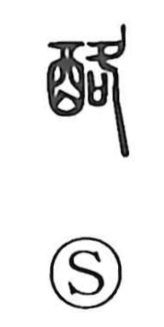

酪

Uncategorized
Kun: | On: raku
dairy products ・ fermented milk ・ cheese
Explanation
酪 is a phono-semantic character: the 酉 element evokes fermented liquids and foods, while 各 acts as the phonetic, giving the on reading raku, as seen also in 洛 and 絡. The Shuowen Xinfu glosses it as nyusho, milk boiled down or condensed into a drink or curd—essentially fermented milk or cheese. The word belongs to the food culture of stock-breeding peoples, and an early Han citation from Li Ling mentions subsisting on mutton and a milk drink (酪漿) to stave off hunger and thirst. From this core sense of curdled or fermented milk comes the modern term 酪農, “dairy farming.”